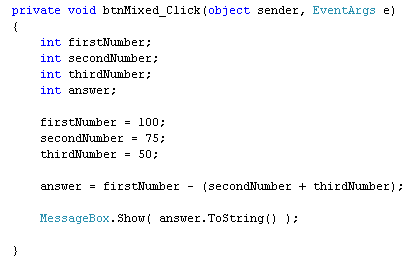

Operator Precedence in C# .NET
<< Continues from the previous lesson
The symbols you have been using ( + and - ) are known as Operators. Operator Precedence refers to the order in which things are calculated. C# sees the plus (+) and the minus ( - ) as being of equal weight, so it does the calculating from left to right. But this "left to right" calculating can cause you problems. Change the plus into a minus in your code, and the minus into a plus. So change it to this:
answer = firstNumber - secondNumber + thirdNumber;
Run your code. When the button is clicked, an answer of 75 will appear in the message box, instead of the 125 you got last time! This is "left to right" calculation. What you wanted here was:
firstNumber - secondNumber
Then when the answer to that is found, add the thirdNumber. So the sum
is this: 100 - 75, which equals 25. Then 25 + 50, which equals 75.
But what if you didn't mean that? What if you wanted firstNumber minus the answer to secondNumber + thirdNumber? In case that's not clear, some brackets may help clear things up. Here's the two ways of looking at our calculation:
( firstNumber - secondNumber ) + thirdNumber
firstNumber - ( secondNumber + thirdNumber )
In maths, brackets are a way to clear up your calculations. In the first one, whatever is between the round brackets is calculated first. The total of the sum in brackets is then added to thirdNumber. In the second one, it's the other way around: secondNumber is first added to thirdNumber. You then deduct from this total the value of firstNumber.
You can use brackets in programming, as well. Add the following brackets to your code:
answer = firstNumber - (secondNumber + thirdNumber);
Your coding window should then look like this:

When you run your programme and click the button, this time the answer is minus 25. Previously, the answer was 75! The reason the answer is different is because you've used brackets. C# sees the brackets and tackles this problem first. The next thing it does is to deduct firstNumber from the total. Without the brackets, it simply calculates from left to right.
Exercise
Try the following:
answer = ( firstNumber - secondNumber ) + thirdNumber;
What answer do you expect to get?